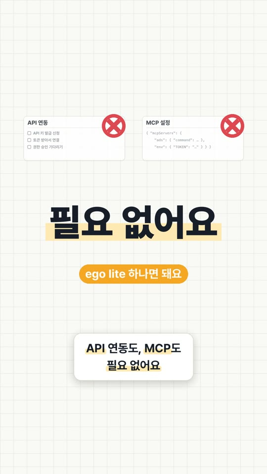
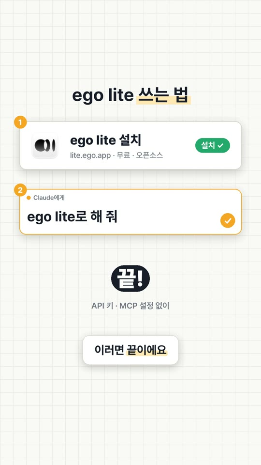
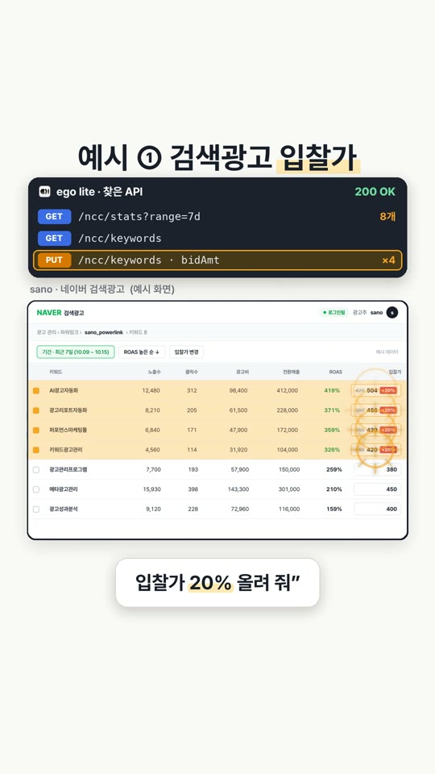
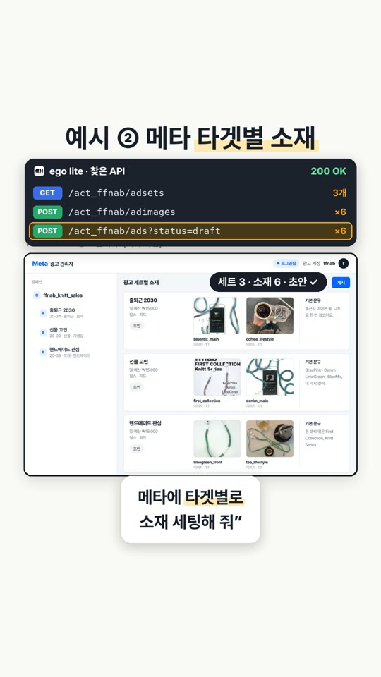
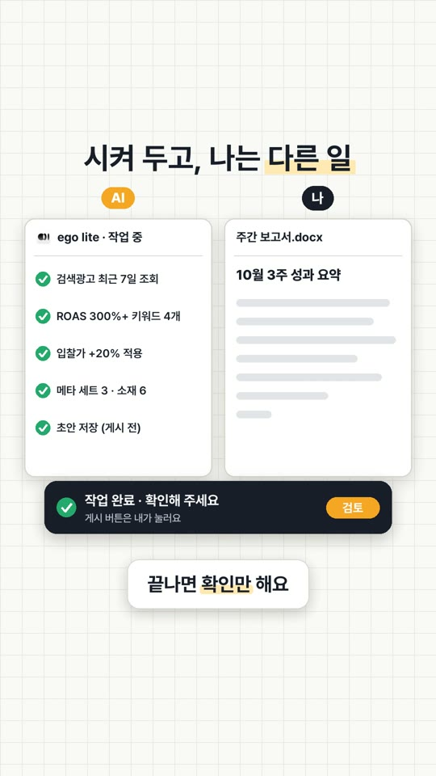
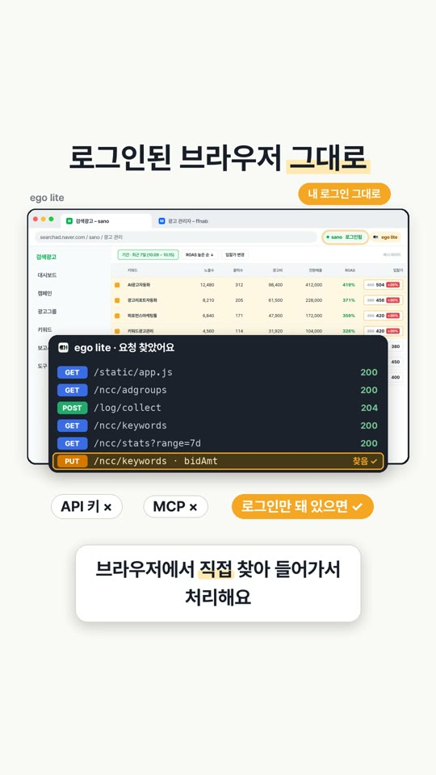

EP.02 · ego lite 쓰는 법
API·MCP 연동 없이
API·MCP 연동 없이
AI한테 광고 세팅
맡기는 법
설치하고, 클로드한테 "ego lite로 해 줘" 한마디. 영상에서 다 못 한 설명과 바로 복사해 쓰는 프롬프트를 모아 뒀어요.
01준비는 세 단계예요
- ego lite 내려받기lite.ego.app에서 받아 설치해요. 무료예요.
지금은 맥에서만 쓸 수 있어요. 윈도우는 사이트에서 출시 알림을 신청할 수 있어요. - 처음 켤 때 안내대로 진행크롬에서 쓰던 데이터를 가져올지 고를 수 있어요. 이 과정에서 클로드 코드 같은 AI 에이전트에
ego-browser스킬이 자동으로 깔려요.
클로드 코드 말고도 Codex · Cursor · Gemini CLI 같은 에이전트에서도 쓸 수 있어요. - ego lite에서 광고 관리자에 로그인네이버 검색광고, 메타 광고 관리자처럼 AI한테 맡길 화면에 평소처럼 로그인해 두면 끝이에요. AI는 이 로그인된 창을 그대로 써요.
02이렇게 시켜요
할 일 앞에 /ego-browser를 붙이거나, 그냥 "ego lite로 해 줘"라고 말하면 돼요. 아래는 영상 속 두 장면의 프롬프트예요. 실무에서 쓰기 좋게 마지막 한 줄씩 더 붙였어요.
영상 속 ② 메타 타겟별 소재 세팅
/ego-browser 바탕화면 ffnab_10월_소재 폴더의 이미지랑 미디어믹스_10월.xlsx를 보고, 메타 광고 관리자에서 타겟별 광고 세트에 소재를 넣어 줘. 게시는 하지 말고 초안으로만 저장해 줘.
💡 "게시하지 말고 초안으로"를 꼭 붙이세요. 마지막 게시 버튼은 내가 누르는 게 안전해요.
덤 · 아무것도 안 바꾸는 계정 점검
/ego-browser 메타 광고 관리자에서 꺼진 광고, 반려된 광고, 예산을 다 쓴 광고 세트를 찾아서 표로 정리해 줘. 아무것도 바꾸지 마.
💡 처음엔 이렇게 '읽기만' 시켜 보면서 손에 익히는 걸 추천해요.
03API 연동 없이 어떻게 돼요?
광고 관리 화면은 버튼을 누를 때마다 뒤에서 서버와 요청을 주고받아요. ego lite는 내가 로그인해 둔 그 화면에서 이 요청을 직접 찾아내고, 버튼을 하나하나 누르는 대신 그 요청으로 한 번에 처리해요. 그래서 API 키를 발급받거나 MCP를 따로 연결할 필요가 없어요.
ego lite · 찾은 요청 (영상 속 예시)
GET/ncc/stats?range=7d
GET/ncc/keywords
PUT/ncc/keywords · bidAmt ×4
→ 요청 1번으로 4개를 한 번에 적용
버튼을 누르고 → 화면을 찍어 확인하고 → 다시 누르는 방식보다 훨씬 빨라요. 왜 빠른지는 EP.01에 더 자세히 있어요.
04꼭 지킬 것
- 내 계정에서 실제로 움직여요. 입찰가 변경 · 게시 · 예산처럼 돈이 걸린 일은 '표로 먼저 보여 줘', '초안으로만'을 붙이고 마지막 확인은 사람이 하세요.
- 관리 화면이 뒤에서 쓰는 요청은 공식 API가 아니에요. 대량 작업 전에는 매체 운영 정책을 한 번 확인해 두세요.
- 처음 몇 번은 결과를 화면에서 직접 확인하면서 쓰세요. 익숙해지면 그때 맡기는 범위를 넓히면 돼요.
05영상 속 장면






영상 속 광고 관리 화면은 이해를 돕기 위해 다시 만든 예시 화면이에요. 숫자도 예시 데이터예요.
실무에서 바로 쓰는 AI 활용법, 하나씩 올려요.
대행사에서 AI 교육하는 현직 마케터가 직접 써 보고 정리해요.
인스타에서 팔로우